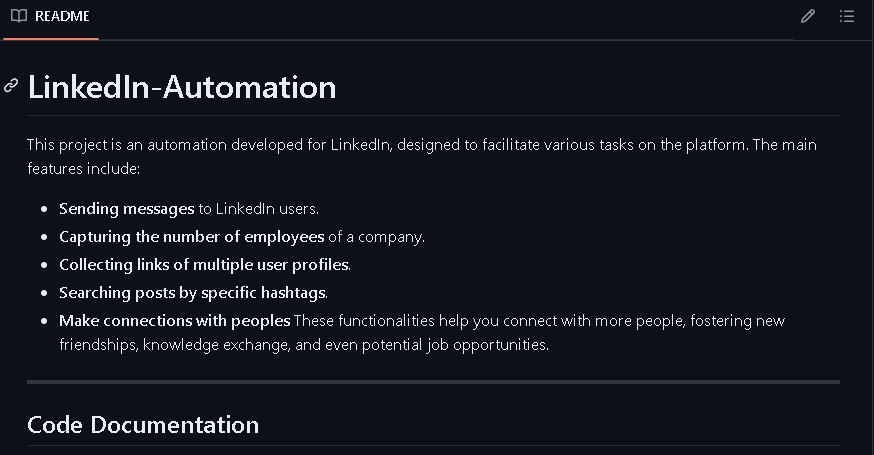
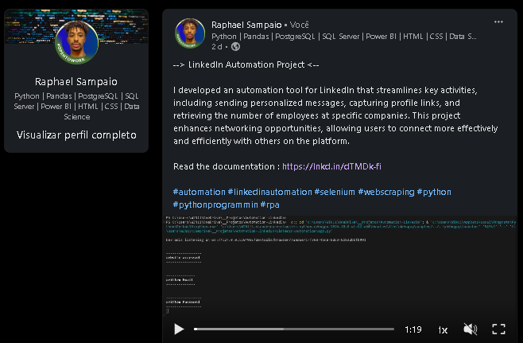

Resume About
This project is an automation developed for LinkedIn, designed to facilitate various tasks on the platform. The main features include:
- Sending messages to LinkedIn users.
- Capturing the number of employees of a company.
- Collecting links of multiple user profiles.
- Searching posts by specific hashtags.
Documentation
The documentation explains everything about the code, including the functions it contains, and how to use them.
For you read the documentation ➤➤CLICK HERE
Publish LinkdIn
On LinkedIn, I Publish a video showing how this automation works. To whatch this video ➤➤CLICK HERE
Creator
Thank you for your interest! I am a programmer focused on data science, with expertise in analysis, statistics, and machine learning. I also have significant experience in automation and web scraping. I regularly work with tools like Pandas, Python, Matplotlib, Selenium, and more.
I recently developed an automation project aimed at helping people generate more connections on LinkedIn. This tool allows users to expand their network, connect with professionals in their field of interest, and potentially even secure job opportunities. The automation is designed to streamline the process of finding and engaging with relevant individuals on LinkedIn, making networking more efficient and effective.
I am currently seeking opportunities in the data science field where I can apply the knowledge and skills I've acquired. You can reach me via email at raphaelsantos.jan@gmail.com or by LinkedIn at LinkdIn RAPHAEL SAMPAIO.
My Key Skills Include:
- Backend development;
- Robotic Process Automation (RPA);
- Web scraping;
- Data Science (Pandas, Numpy, SciPy, Matplotlib, Seaborn, Scikit-learn);
- Database administration.
My Education:
I have completed various courses in areas such as:
- Python;
- Data Analysis;
- Machine Learning;
- SQL;
- WordPress;
- AI Fundamentals;
- Power BI;
- HTML / CSS.